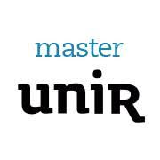

Maestria Dirección y gestión de proyectos tecnologicos
close
Formación que me permite dirigir e implementar proyectos de I+D o cualquier proyecto de tecnología (IT, telecomunicaciones, ...).

Ingeniero Quimico
close
Promedio de 8.5 Logros: Exponer en e AMIDIQ modelo de absorcion de CO2 para el tratamiento de gases de combustion Beca Semar-Conacyt Participación en manejo de polvos en la industria aliemnticia(Chocolates) y farmaceutica(Laboratorio Farmaceutica I)

Ingeniero Mecatronico
close
Promedio: 9.0 Logros: Participación en torneos de robotica, desafios de automatización Beca academica